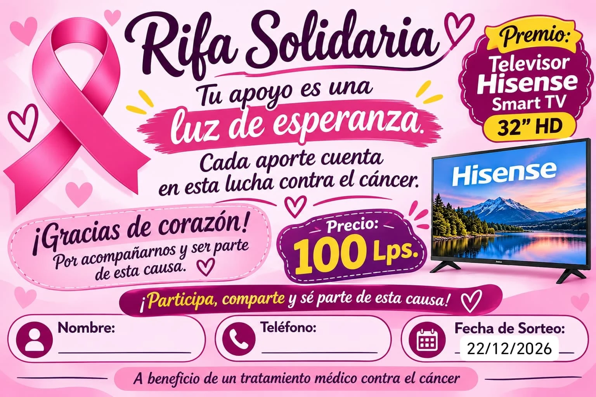

Rifa Solidaria
Manual de usuario · v1.0 · Noviembre 2026
Sitio: https://raffle-manager-tickets.vercel.app

1. ¿Qué es?
Página web para vender los boletos (L 100 cada uno; meta inicial L 20,000 = 200 boletos, ajustable desde el panel) de la rifa a beneficio de un tratamiento médico contra el cáncer. Premio: Televisor Hisense Smart TV 32" HD. Sorteo: 22/12/2026.
Tiene dos partes: la vista pública, para quienes compran, y el panel administrativo, para la persona encargada, que se abre con un PIN.
2. Estados de un boleto
| Estado | Significado |
|---|
| Disponible | Nadie lo ha pedido. Puede salir al azar. |
| Por verificar | Una persona lo pidió y envió el WhatsApp. Falta confirmar el comprobante de pago. |
| Vendido | La encargada verificó el pago. Participa en el sorteo. |
3. Para quien compra
- Abre el enlace de la rifa.
- Toca 🎟️ Obtener mi número. Pasan números al azar, solo de los disponibles, hasta detenerse en el tuyo.
- El número queda apartado 10 minutos. Escribe tu nombre completo y tu teléfono.
- Toca ✅ Confirmar y enviar por WhatsApp. Se abre WhatsApp con un mensaje listo para la encargada, que incluye el número, tu nombre, tu teléfono y el monto. Envíalo.
- La encargada te responderá pidiendo el comprobante de pago.
- Para comprar más, toca 🎟️ Comprar otro boleto.
Si WhatsApp no se abre solo, toca el botón verde 💬 Enviar por WhatsApp. Si pasan los 10 minutos sin confirmar, el número se libera y debes pedir otro.
4. Panel administrativo
4.1 Entrar y salir
- Toca 🔒 Admin, en la esquina superior derecha.
- Escribe el PIN de 6 dígitos y toca Entrar.
- 🎯 Meta: cambia la meta de recaudación (múltiplo de L 100). La cantidad de boletos se recalcula sola (meta ÷ L 100) y se actualizan la página pública y el dashboard. Si la bajas, solo se eliminan boletos libres del final; si alguno ya está apartado o vendido, el sistema no lo permite.
- 📱 WhatsApp: número que recibe los mensajes de compra. Configúralo con el número de la encargada antes de compartir el enlace.
- Para salir, toca Salir del panel. Al recargar la página también se cierra la sesión.
Seguridad: después de 5 intentos fallidos, el acceso se bloquea 10 minutos. El PIN inicial lo entrega el administrador técnico. Cámbialo la primera vez que entres con 🔑 Cambiar PIN.
4.2 Pestaña 🎟️ Boletos (verificar pagos)
- Al entrar se muestra el filtro Por verificar para avanzar rápido. Cada filtro muestra su cantidad.
- El buscador acepta número (
26 o #026), nombre o parte del teléfono.
- El teléfono es un enlace: abre WhatsApp con esa persona para pedirle el comprobante.
- Acciones:
- ✓ Verificar pago: el boleto pasa de Por verificar a Vendido y se guarda la fecha de venta.
- Liberar: si la persona no pagó, el boleto vuelve a Disponible y se borran sus datos. Pide confirmación.
- ↩ Por verificar: deshace una verificación hecha por error.
- Toca ↻ Actualizar para ver las compras nuevas.
4.3 Pestaña 📊 Dashboard
- Muestra la cantidad y el monto de boletos vendidos, por verificar, disponibles y el total apartado.
- Barra de la meta: lo verificado frente a L 20,000.
- Gráfica de boletos por día. El día con más ventas aparece en amarillo.
- Lista de los últimos movimientos.
4.4 Pestaña 🎡 Sorteo
- La ruleta incluye solo los boletos Vendidos. Verifica todos los pagos antes del sorteo.
- Toca 🎡 Girar ruleta. El servidor elige el ganador al azar y lo registra; la ruleta se detiene en ese número.
- Descarga la imagen del ganador con ⬇️ Descargar PNG o ⬇️ Descargar JPEG para compartirla. La imagen oculta parte del teléfono.
Si vuelves a girar, el sistema pide confirmación y el nuevo resultado pasa a ser el ganador vigente. El boleto ganador no se puede liberar.
5. Preguntas frecuentes
¿Pueden salir dos personas con el mismo número? No. La base de datos asigna cada número a una sola persona.
¿Quién ve los datos de los compradores? Solo quien entra al panel con el PIN. La página pública no muestra nombres ni teléfonos.
¿Cómo cambio el número de WhatsApp que recibe los mensajes? En el panel, toca 📱 WhatsApp, escribe el número con código de país (ej. 504 y el número) y guarda. Aplica de inmediato.
Olvidé el PIN. El administrador técnico puede restablecerlo desde la base de datos (Supabase). Las instrucciones están en el README del proyecto.